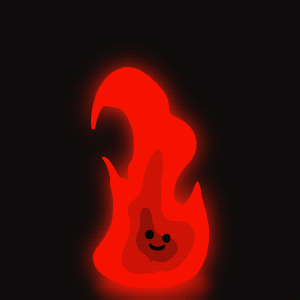
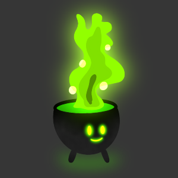

Fire
Watch how a the cute innocent fire grows into a monster of a flmae when he dosen't get his way. I used procreate's aninmation program to design each gif that is featured here.

The Cauldron of Northwood
Featuring the evil witch Azalea's caudron. What evil brews will she concoct today pray tell? The technique used for this design was also used by procreate

Forseeing the future
An all seeing all poweful crystal that only gives you yes or no answers, are you. brave enough to see what the future holds for you? To reiterrate I used procreate for all these designs. I love fantasy and the odd and watned to showcase that here in my examples.